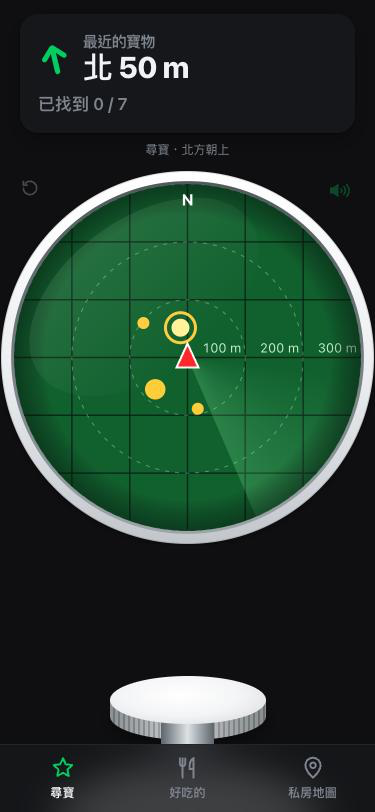
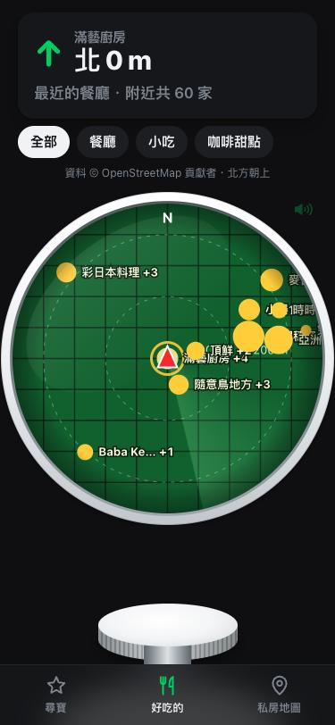
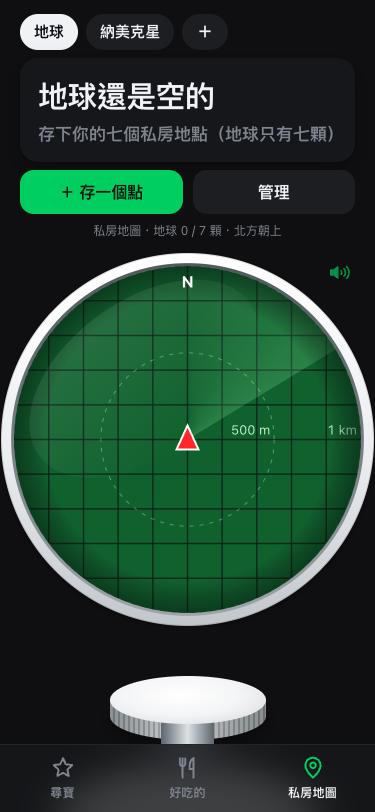

可以玩什麼
尋寶
一打開就在身邊撒七顆寶物，跟著雷達走過去撿。範圍自己選 100／300／800 公尺。
集滿七顆有召喚演出
畫面變暗、手機震動、地鳴、白光一閃……四種結局輪流出現。到底會召喚出什麼？自己去撿撿看。
好吃的
附近一公里的餐廳、小吃、咖啡店，雷達直接指方向。
私房地圖
存自己的秘密地點，「地球」「納美克星」各限七顆。
不用安裝、不用註冊
手機瀏覽器打開就能玩，紀錄只存在自己手機。
畫面



怎麼開始
- 用手機打開 jjptt1980.github.io/find-elder。
- 允許使用位置（和指南針），雷達就會開始轉。
- 選「尋寶」，跟著亮點走過去，七顆撿滿就開始召喚。